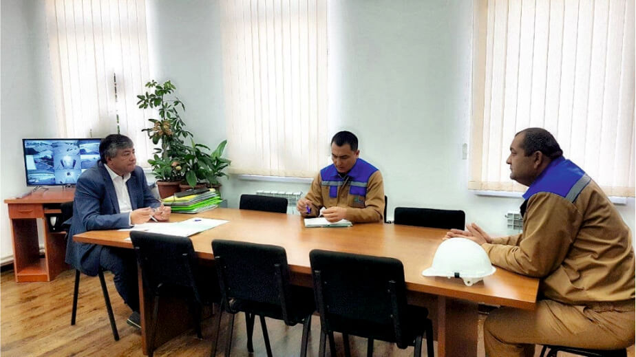
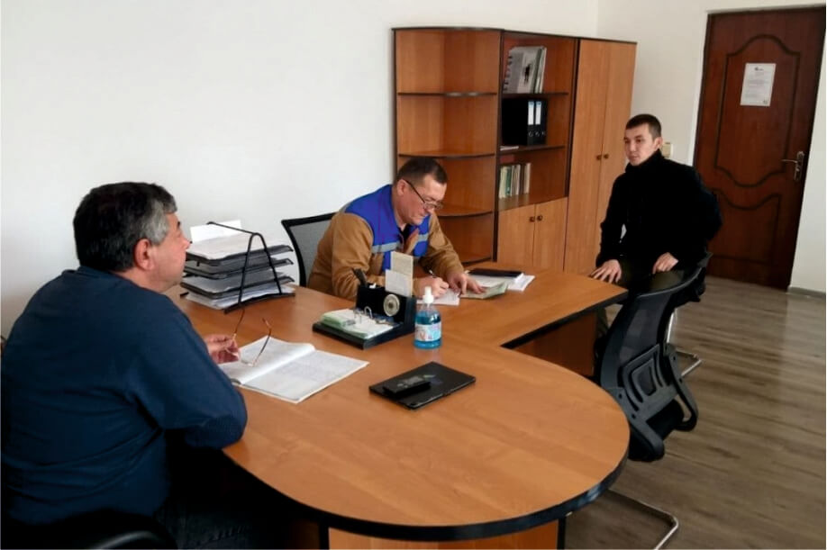

“O‘ztransgaz” AJ Boshqaruv raisining ishonchli vakili “Urganchtransgaz” UKga qarashli Qo‘ng‘irot MGQB, Qo‘ng‘irot texnologik suv ta’minoti boshqarmasi, Xo‘jayli sanoat maydonchasi, Urganch qurilish-montaj boshqarmasi va “Gazenergikta’mir” ishlab chiqarishtexnik korxonasida, shuningdek, Ohangaron Gaz siquv kompressor stansiyasida jismoniy va yuridik shaxslarning murojaatlari yuzasidan navbatdagi sayyor qabullar o‘tkazdi. Qabullar davomida 12 nafar murojaatchi qabul qilinib, ularning mavjud muammolari tinglandi.
Murojaatlarning aksariyati bo‘yicha korxonalar rahbarlariga mutaxassislarni jalb qilgan holda o‘rganish ishlarini olib borish va natijasi bo‘yicha mualliflarga qonunda belgilangan muddatlarda yozma javob xatlari yuborish topshirildi. Qolgan murojaat mualliflariga ularning murojaatlari yuzasidan shu yerning o‘zida tegishli tartibda tushuntirishlar berildi.
